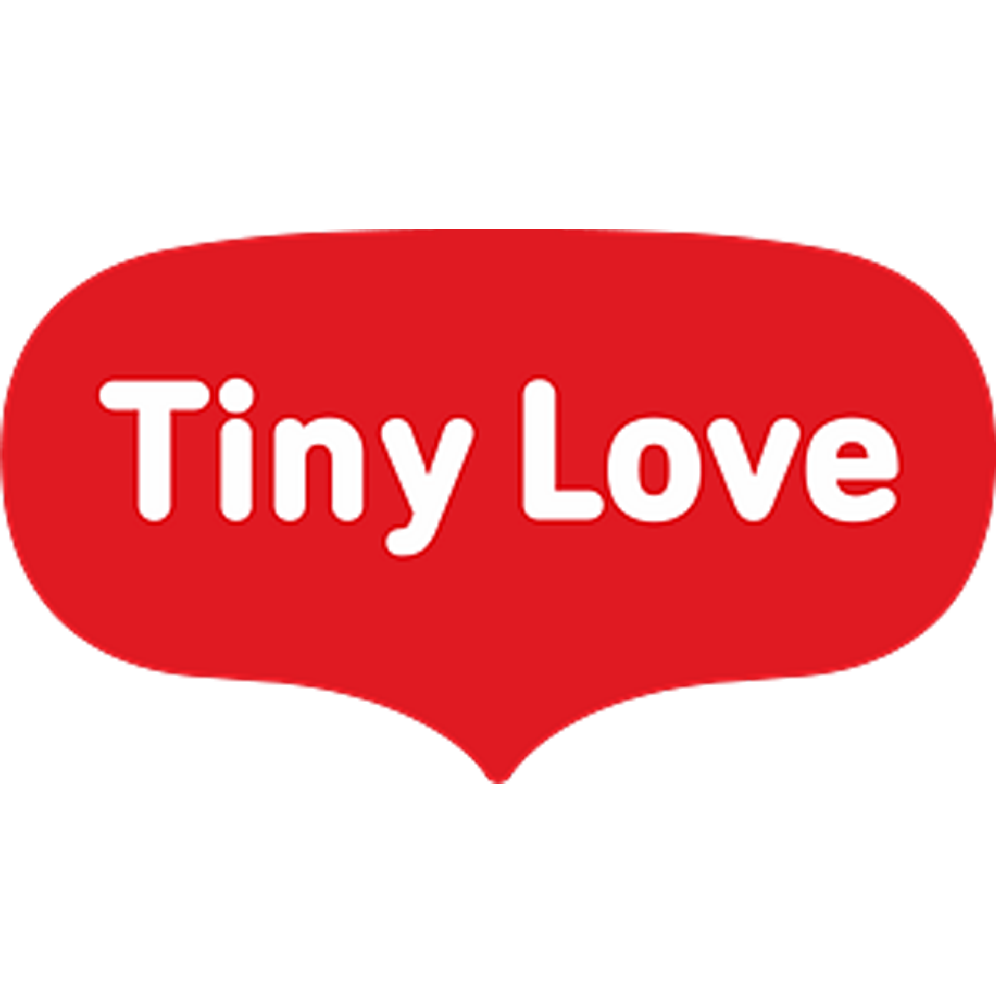

-
史开鹏
开展慰问环卫工人活动，进一步推动党员“双报到”志愿服务活动走深走实，志愿者们分组行动，为工作中的环卫工人送上毛巾、洗衣液、护发素、绿豆、菊花茶、香皂、水杯、洗发水等生活用品...
环保、文明 -
李晶
积极参与“弘扬雷锋精神，贡献青春力量”雷锋主题志愿活动，青年志愿者走进社区为周边工友、居民等提供义诊、义剪、磨剪刀、裁缝、法律援助、政策宣传等便民服务...
热爱、救助 -
陈毅
志愿者们分别从防范电信诈骗、电动自行车管理条例、消防安全、生产安全、文明交通宣传等方面为居民开展宣传活动，志愿者们发放传统宣传单页并结合实际案例进行讲解，吸引许多居民到现场了解并学习相关的知识与政策。
宣讲、解惑 -
于朕鑫
“这是60年前的老书，但雷锋精神的传承历久弥新、永无止境。”在“旧书新知区”，向大家展示出一本1963年出版的《中国青年——学习雷锋专辑》，其中首版首刊是毛泽东主席题词“向雷锋同志学习”。
传承、精神 -

武晓莉
常态化开展党的创新理论宣讲、文明实践行动、敬老助老、关爱青少年、关爱残疾人、“平安甘肃”建设7项主题志愿服务活动，引导广大志愿者和志愿服务组织弘扬志愿精神，传播志愿文化，以志愿力量为社会治理注入活力。
关爱、实践 -
霍永瑨
便民市集人头攒动，热闹非凡，在政策宣讲区、法律咨询区、公益服务区等多个区域，居民纷纷在自己感兴趣的摊位前排起了长队，志愿者们忙碌地为居民服务着，用自己的专业技能为百姓带来最实在的帮助。测血压、缝纫、理发、首饰清洗、为老送餐……服务送到了居民百姓的“心坎上”，增添了邻里生活的“人情味”。>温暖、互助
-
董立军
围绕市区周边治理中心工作，依托新时代志愿服务品牌“志愿＋”项目体系，积极投身到公益劳动、志愿服务、文明城市、和谐社会、基层治理等工作中，奋楫笃行，善作善成，用实际行动践行和弘扬新时代雷锋精神。
奉献、弘扬